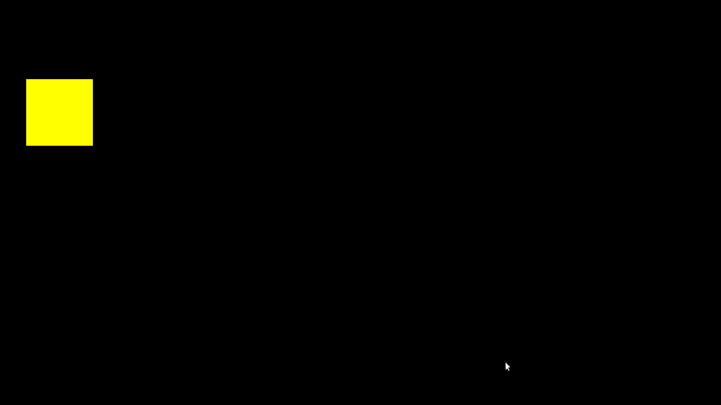
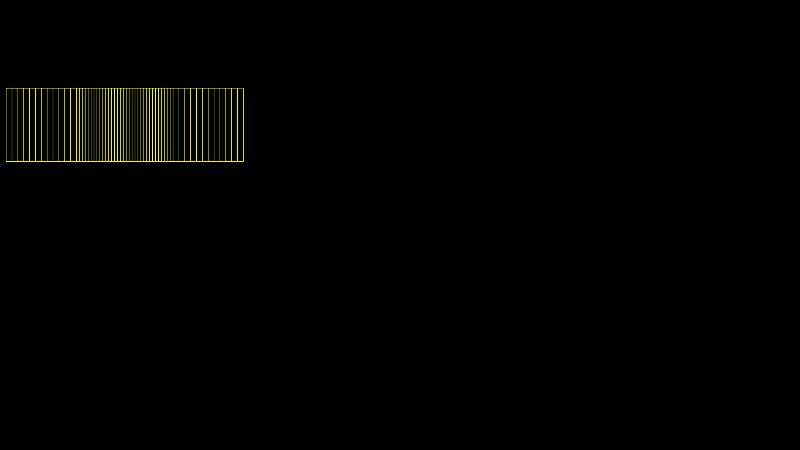
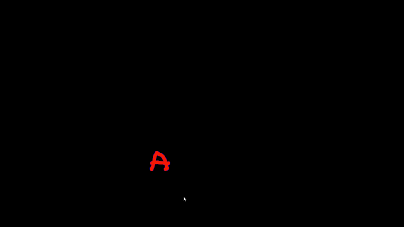
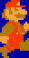
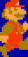
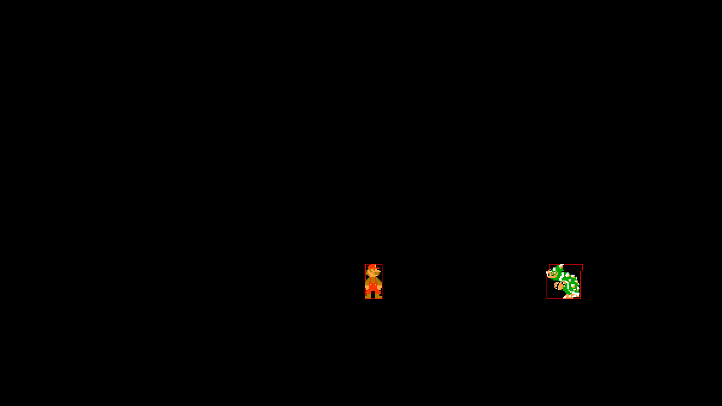

Создание игры для Linux с помощью Weaver Framework
1.
Это статья о Weaver Framework, небольшом фреймворке для создания двухмерных игр под Линукс. Weaver написан на языке программирования Си, т.е. для создания игры с его помощью вам потребуется хотя бы начальные знания этого языка программирования.
Для начала нужно сказать, что фреймворк всего содержит около 70 функций для манипулирования звуком, картинками, создания графических примитивов, детектора столкновений и кое-чего еще. В ходе этой статьи будут описаны почти все функции.
Сайт проекта находится по адресу http://weaver.nongnu.org/, там же можно получить уже собранный пакет в формате .deb либо тарбол с исходным кодом, для не debian-based систем. Итак, приступим.
2.
После завершения удачной установки, можно сразу приступать к созданию проекта. Для этого нужно открыть консоль, перейти в директорию, где будет располагаться наш новый проект и набрать:
weaver <project-name>
В ходе создания проекта <project-name> будет создана иерархия директорий, предназначенных для хранения графических, звуковых и исходного кода файлов. Для начала, чтобы потренироваться, создадим проект test. Он будет использоваться для изучения возможностей weaver.
2.1. Создание пустого проекта
weaver test
Несколько слов о содержимом директории проекта.
test
|
|-fonts
|-images
|-music
|-sounds
+-src
| |-weaver
--LICENSE
--Makefile
В принципе, названия говорят сами за себя. Упомяну лишь о /src, здесь содержатся как непосредственно файлы проекта (game.c, game.h — основные), так и (в директории /weaver) файлы самого фреймворка необходимые для удачной сборки проекта.
Рассмотрим файл /src/game.c подробнее. Он является основным файлом проекта и именно в нем находиться главный цикл программы.
int main(int argc, char **argv)
{
awake_the_weaver(); // Initializing Weaver API
// Main loop
for(;;){
get_input();
if(keyboard[ANY]){
break;
}
weaver_rest(10000000);
}
may_the_weaver_sleep();
return 0;
}
Функции
awake_the_weaver()
и
may_the_weaver_sleep()
разрешают и запрещают использование функций из фреймворка. Между ними находится главный цикл программы.
get_input() служит для захвата состояния клавиатуры и мышки. Следом за этим идет участок кода. отвечающий за выход из программы по нажатию любой клавиши.
weaver_rest(n) предназначена для приостановки программы на некоторое количество наносекунд, эта же функция отвечает и за FPS, чем ниже число n, тем выше FPS.
Для сборки проекта набираем в консоли команду make и ждем удачного завершения.
gcc -Wall -O2 -g $(freetype-config --cflags) -c src/weaver/display.c
gcc -Wall -O2 -g $(freetype-config --cflags) -c src/weaver/keyboard.c
gcc -Wall -O2 -g $(freetype-config --cflags) -c src/weaver/vector2.c
gcc -Wall -O2 -g $(freetype-config --cflags) -c src/weaver/vector3.c
gcc -Wall -O2 -g $(freetype-config --cflags) -c src/weaver/vector4.c
gcc -Wall -O2 -g $(freetype-config --cflags) -c src/weaver/weaver.c
gcc -Wall -O2 -g $(freetype-config --cflags) -c src/weaver/sound.c
gcc -Wall -O2 -g $(freetype-config --cflags) -c src/weaver/image.c
gcc -Wall -O2 -g $(freetype-config --cflags) -c src/weaver/font.c
gcc -Wall -O2 -g $(freetype-config --cflags) -c src/game.c
gcc -Wall -O2 -g $(freetype-config --cflags) -g -o test display.o keyboard.o vector2.o vector3.o vector4.o weaver.o sound.o image.o font.o game.o -lX11 -lXext -lm -lvorbisfile -lasound -lpng -lfreetype $(freetype-config --cflags)
Удача. Запустим проект:
./test
Вот и все! Нажатие любой клавиши закрывает игру.
Дальше мы изучим функции необходимые нам для создания игры.
2.2. Работа с клавиатурой
Состояние клавиатуры содержит глобальная переменная keyboard. Узнать нажата ли нужная нам клавиша можно таким нехитрым образом:
if (keyboard[<some-key>])
{
// что-нибудь происходит
}
Если нужно чтобы программа реагировала на сочетание клавиш, используем Логическое-И:
if (keyboard[<some-key-1>] && keyboard[<some-key-2>])
{
//что-нибудь да произойдет!
}
Теперь изменим программу так, чтобы выход производился по нажатию Ctrl-Q.
Изменим
if(keyboard[ANY])
{
break;
}
на
if(keyboard[LEFT_CTRL] && keyboard[Q])
{
break;
}
Рискнем собрать и запустить игру. Теперь для выхода нам необходимо нажать комбинацию клавиш Ctrl-Q.
2.3. Рисование графических примитивов
Для рисования примитивов служат функции:
draw_circle()
draw_ellipse()
draw_line()
draw_point()
draw_rectangle()
Для заливки примитово используются функции
fill_circle()
fill_ellipse()
fill_rectangle()
Их название, как и названия большинства функций weaver, наглядны и не нуждаются в подробном описании. Описания требуют лишь параметры, но ссылка на Reference Guide будет дана в конце статьи.
Не будем стоять на месте и нарисуем желтый квадрат с координатами (x=50, y=150) и размером 125x125. В основной цикл добавим такую запись:
draw_rectangle(50, 150, 125, 125, YELLOW);
где YELLOW — цвет нашего квадрата.
Собираем проект и смотрим что получилось.
Не то, чего мы ожидали, правда?
Дело в том, что задавая цвет в рисовании квадрата, мы задаем цвет его границы, поэтому нам необходимо залить наш квадрат с помощью функции fill_rectangle(). Что мы и делаем, добавляя после команды рисования квадрата следующую строку:
fill_rectangle(50, 150, 125, 125, YELLOW);
Пробуем и смотрим!

На этот раз у нас все вышло. Теперь попробуем объединить наши знания об использовании клавиатуры и рисовании примитивов. Но перед этим немного оптимизируем нашу программу, создав сам квадрат как переменную.
rectangle является структурой, с 4 параметрами ось x (параметр x), ось y (параметр y), ширина (параметр w) и высота (параметр z).
Создадим же переменную типа rectangle, добавив после инициализации weaver (напомню, это awake_the_weaver()):
rectangle rect1;
Затем инициализируем ее параметры:
rectangle rect1;
rect1.x=50;
rect1.y=150;
rect1.w=rect1.z=125;
Зададим обработку для нажатия клавиш <стрелка-влево> и <стрелка-вправо> клавиатуры.
if (keyboard[LEFT])
rect1.x-=10;
if (keyboard[RIGHT])
rect1.x+=10;
А затем и рисование самого квадрата:
draw_rectangle(rect1.x, rect1.y, rect1.w, rect1.z, YELLOW);
Отмечу, что инициализация параметров переменной должна находлиться до главного цикла отрисовки, т.е. до for(;;).
Соберем и запустим наш проект.

И опять не то, что мы хотели бы видеть?
Дело в том, что рисование происходит при каждой итерации главного цикла, но и только. Всё, что было нарисовано до этой итерации так и остается на экране никак не стираясь. Это легко решается очисткой экрана перед каждой новой отрисовкой экрана. Для заливки (а в данном случае, очистки) экрана используется функция
fill_screen()
принимающая в качестве параметра цвет заливки. Добавим ее перед рисованием квадрата и снова посмотрим, что получится.
Удача! Перейдем к загрузке и рисованию изображений.
2.4. Загрузка и рисование изображений
Единственный возможный в weaver формат изображения — .png, его и будем использовать. Нужно помнить, что все изображения должны находиться в директории <project-name>/images.
Для начала объявим и инициализируем указатель на тип surface, представляющий изображения:
surface *face=new_image("face.png");
Функция new_image() принимает один аргумент — название графического файла.
Для отображения графического файла существует функция
draw_surface()
принимающая в качестве аргументов указатель на изображаемый графический файл (surface *origin), указатель на то, где будет изображаться (surface *destiny) и координаты (x, y).
Графические файлы можнно рисовать на других графических файлах, чтобы рисовать просто на экране, в качестве параметра destiny нужно указывать window, это и есть указатель на текущее окно рисования.
Уберем лишние упоминания о квадрате, соберем проект и запустим его.
Итог наших стараний:
Для более удобной манипуляции рисунком создадим структуру, состоящую из указателя на картинку и ее координат на экране.
struct pict{
surface *fc;
int x;
int y;
};
Заново создадим и инициализируем изображение:
face.fc=new_image("face.png");
face.x=100;
face.y=100;
Заставим его отображаться:
draw_surface(face.fc, window,face.x, face.y);
Теперь можно попробовать управлять местоположение изображения используя наши знания о клавиатуре. Не буду вам подсказывать, надеюсь у вас получиться.
2.5.Вывод текста на экран.
Этот раздел вас наверняка разочарует, но weaver не умеет выводить текстовые сообщения на экран. В проекте есть модули отвечающие за вывод текста, но они не используются. Почему? Видимо автор еще не готов к этому ;). Но он сам предложил решение проблемы. Для вывода текста используется своеобразная палитра — набор букв, размещенный на изображении, откуда буквы по мере надобности берутся и выводятся на экран. Этот прием использовался и раньше в старых (и не очень) играх.
Воспользуемся им и мы. Для этого загрузим картинку с уже набранным буквами в нашу игру.
surface *font=new_image("font2.png");
Итак, у нас есть картинка с размещенными на ней несколькими буквами. Как же брать из нее нужные на буквы? Для вывода некотрой части изображения используется функция blit_surface(). Параметр *src принимает указатель на исходный графический файл, *dest принимает указатель на поверхность для изображения, (x_src, y_src) — координаты, откуда будет начинаться вырезанное изображение, width — ширина нового изображения, height — его высота, (x_dest, y_dest) -координаты целевого пповерхности, куда будет выводиться вырезанное изображение.
Добавим вызов функции и посмотрим, что получиться.
blit_surface(font, window, 0, 0, 90, 100, 500, 500);

Не так это и страшно, но остался один вопрос — на рисунке красные буквы на темно-синем фоне, но выводятся только буквы красного цвета. Это связано с тем, что, по-умолчанию, темно-синий цвет (#00029a) считается прозрачным и не выводится. Если вас не устраивает именно этот цвет, то можно его поменять, просто задав другое значение переменной transparent_color.
2.5.Звук
К сожалению, на формат звуковых файлов тоже наложено ограничение — weaver проигрывает лишь файлы формата Ogg Vorbis. Для проигрывания звуков есть две функции: play_music() и play_sound(). Разница между ними в том, что play_music() будет повторять музыку до тех пор, пока не будет вызвана функция stop_music(). Функция play_sound() проигрывает музыкальный файл лишь один раз и управлять воспроизведение этой функции мы не в состоянии. Очевидно, что play_music() лучше использовать для воспроизведения звукового фона игры, а play_sound() для воспроизведения звуковых эффектов.
Попробуем воспроизвести звук. Для play_sound() файл должен располагаться в директории sound, а для play_music() в директории music соответственно.
Добавим перед главным циклом:
play_sound("sound.ogg");
Затем, как обычно, соберем и запустим игру. Et voilà, слышен звук выстрелов.
2.6.Определение столкновений
Для определения столкновений между объектами служит набор функций, имеющий в названии префикс collision_*. Использовать их так же легко как и все остальное. Для примера создадим два прямоугольника:
rectangle rect1, rect2;
rect1.x=rect1.y=50;
rect1.w=rect1.z=25;
rect2.x=rect2.y=150;
rect2.w=rect2.z=50;
Один из них будет двигаться:
if (keyboard[LEFT])
rect1.x-=10;
if (keyboard[RIGHT])
rect1.x+=10;
if (keyboard[UP])
rect1.y-=10;
if (keyboard[DOWN])
rect1.y+=10;
И финальная часть, проверка на столкновение и реакция на это:
if (collision_rectangle_rectangle(&rect1, &rect2))
break;
Естественно, что для наглядности следует отображать наши прямоугольники на экране.
3.
Теперь мы достаточно знаем, чтобы попробовать написать собственную небольшую игру. Это будет сильно упрощенный Марио, без преград, но с врагами.
Начнем!
3.1. Проект будет называться YAM (Yet Another Mario)
weaver yam
Это все хорошо, но с чего же начать? Для начала неплохо было бы придумать интерфейс игры, затем найти необходимые ресурсы для графического оформления игры. Что это? Это могут быть спрайты персонажей, фоновый рисунок, палитра букв.
О интерфейсе. Его у нас не будет, по сути игра будет представлять собой один короткий уровень, пройти его нужно будет с одной попытки.
Теперь о спрайтах. Подробнее о них вы можете почитать в Википедии. Есть большое количество сайтов, где можно найти как рипнутые из игр спрайты, так и авторские, сделанные «по мотивам». Нам нужны как минимум два типа спрайтов, для Марио и для его противника. Погуглив, я нашел несколько сайтов с базами данных спрайтов, на одном из них спрайты были размещены в едином изображении, на другом предоставлялись отдельными картинками. Выберем, где они разбиты, это нам понадобиться для более удобного создания анимации персонажей.
3.2. Так как мы желаем чтобы при нажатии на клавишу движения перемещалась не просто статичная картинка, а было хоть какое-то подобие движения, нам нужно анимировать персонажей. Делается это с помощью ряда похожих изображений, где различия лишь в деталях.
У нас есть 3 вида спрайтов для анимации Марио.

 

Принцип анимации, я думаю вам знаком, это просто последовательное изображение нескольких картинок.
Создаем структуру, где будем хранить данные о персонаже:
struct character{
surface *fc[3];
int x;
int y;};
Инициализируем переменную для Марио:
mario.x=mario.y=100;
mario.fc[0]=new_image("mw1.png");
mario.fc[1]=new_image("mw2.png");
mario.fc[2]=new_image("mw3.png");
Ну и наконец начем анимацию персонажа, но так как экран обновляеться каждые 0.01 секунды, то изображения будут сменяться очень часто. Это можно исправить либо уменьшив значение FPS, передав функции weaver_rest() значение больше текущего, либо используюя счетчик кадров, который будет решать какой именно спрайт будет отображаться в данном кадре. Будем использовать метод со счетчиком.
Перед главным циклом создадим переменную counter, которая и будет счетчиком
int counter=0;
А в главном цикле будет находиься проверка счетчика и в зависимости от его значения будет рисоваться тот или иной спрайт анимации:
if (counter<=10){
draw_surface(mario.fc[0], window, mario.x, mario.y);
counter++;
}
if (counter>10 && counter<=20){
draw_surface(mario.fc[1], window, mario.x, mario.y);
counter++;
}
if (counter>20 && counter<=29){
draw_surface(mario.fc[2], window, mario.x, mario.y);
counter++;
}
if (counter>29)
counter=0;
Готово, можно собирать проект и запускать.
Точно так же анимируем и противника Марио.
Теперь, чтобы у Марио была хоть какая-нибудь возможность победить, реализуем возможность его прыжка. С этим все просто, при нажатии на клавишу изменяется значение координат по вертикали.
После этого можно начать обрабатывать столкновения Марио и его противника. Для этого добавим в структуры, описывающие персонажа игры, прямоугольник, за пересечением которых и будем отслеживать.
Теперь структура выглядит так:
struct character{
surface *fc[7];
int x;
int y;
rectangle col_det;};
Задаем базовые значения для персонажей (в принципе это и не нужно, так как в главном цикле они все-равно обновятся), добавляем пару строчек для привязки прямоугольников к координатам спрайтов. Для наглядности заставим на некоторое время прямоугольники будут отобржаться красным цветом, это мы уберем в самом конце. Запускаем и смотрим что получилось.

Теперь можно приступить и к реализации ответа на пересечение прямоугольников, для этого мы используем уже знакомую функцию collsion_rectangle_rectangle():
if (collision_rectangle_rectangle(&mario.col_det, &bowser.col_det))
{
break;
}
Вот и все, при столкновении персонажей игра будет завершаться. Легко и просто.
3.3. Осталось добавить последние штрихи к нашей игре, т.е. фон и звуковые эффекты
Для добавления звуковых эффектов и фоновой музыки воспользуемся функциями play_music()/stop_music() и play_sound().
Управление простое — стрелка влево - стрелка вправо — движение, стрелка вверх — прыжок
Вот и готова наше убогая пародия на великолепную игру. Если возникнет желание, можете добавить облака, кусты, ну и, конечно же, грибочки.
Как видите, написать игру, используя лишь Си достаточно легко, гораздо труднее сделать это хорошо.
Напоследок небольшой список полезных ссылок
http://weaver.nongnu.org/ — веб сайт фреймворка Weaver, там вы найдете как подробную документацию, так и примеры кода.
Если вы желаете повторить примеры из статьи — вот ссылка на архив с исходными текстами нашей игры: http://narod.ru/disk/16196657001/yam.tar.gz.html.